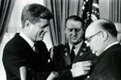
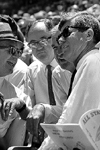
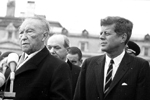

{kind=link}
 2. 3.
2. 3. {kind=link}
297-13-34 370-3-23 379-3-11
John F. Kennedy
To see a larger version of a photograph
just click on the image. The three-part number code refers to the original photograph
in the Atkins Collection.
1. 2. 3.
297-13-34
370-3-23 379-3-11
1. Senator John F. Kennedy at
a meeting during 1956 Democratic Convention.
2. Senator Kennedy and and his brother, Robert Kennedy, Counsel to theMcClellan
Committee, in a committee hearing, 1957.
3. Senator Kennedy and his wife, Jacqueline, during the announcement ofhis candidancy
for President.
4. 5. 6.
383-5-30 374-2-34 383-7-23
4. Senator Kennedy on train during his 1960 campaign for President.
5. Senator Kennedy "pressing the flesh" during his 1960 campaignfor
President.
6. Senators Kennedy and Lyndon B. Johnson campaigning in Johnson's homestate,
Texas.
7. 8. 9.
383-4-11 381-1-2 377-1-13
7. Senators Kennedy and Johnson
enjoying a light moment during their1960 campaign.
8. President Kennedy closeup.
9. Senators Kennedy, Johnson and Henry Jackson (D-Washington), August 1960.
 10. 11. 12.
10. 11. 12.
1-4-4 370-10-13 379-1-24
10. President Dwight D. Eisenhower
and President-elect Kennedy ina meeting after the election, January 1961.
11. Presidents Dwight Eisenhower and John Kennedy with their wives duringthe
inaugural ceremony, January 1961.
12. President Kennedy and his father, Joseph, during the inaugural ceremony,January
1961.
13. 14. 15.
370-10-27 379-4-11 382-1-18
13. President Kennedy giving his
inaugural address, January 1961.
14. Newly inaugurated President Kennedy before Congress, January 1961.
15. President Kennedy responding to questions at a White House press conference,March
1961.
16.  17. 18.
17. 18.
382-2-12 375-5-22 383-14-15
16. President Kennedy with a young
visitor in the Oval Office, March1961.
17. President Kennedy responding to questions from press.
18. President Kennedy at a White House press conference.
19. 20. 21.
383-14-11 143-4-8 7-2-5
19. President Kennedy closeup.
20. President Kennedy and National Security Advisor McGeorge Bundy in OvalOffice.
21. President Kennedy and General Curtis LeMay (with Vice-President Johnsonbehind
LeMay) at a White House ceremony, July 1961.
22. 23. 24.
27-2-8 30-2-21 3-4-26
22. President Kennedy and Undersecretary
of State Averill Harrimanon the White House porch.
23. President Kennedy and Dean Rusk (with Marshal Tito at far left behindthe
microphones) at the Tito reception at the White House, October 1963.
24. Kennedy speaking at a press conference, March 1961.
 25.  26. 27.
2-1-10 17-10-1 29-2-2
25. Kennedy presents the Legion
of Merit award to H.E. Paul HenriSpaak, Secretary General of NATO, February
1961.
26. The President at an All-Star baseball game with Senators Hubert Humphrey(D-Minnesota)
and Stuart Symington (D-Missouri), July 1962.
27. President Kennedy and Bob Hope share a laugh at the White House, September1963.
28. 29.  30.
30.
12-11-26 12-11-16 12-12-4
28-30. Several shots of President
Kennedy speaking at a press conference,February 1962.
 31. 32. 33.
21-3-6 30-2-27 31-1-9
31. Kennedy welcomes German Chancellor
Konrad Adenauer to the WhiteHouse, November 1962.
32. Kennedy with President and Mrs. Tito at the White House, October 1963.
33. President and Mrs. Kennedy observe a Scottish military ceremony onthe White
House lawn, November 1963.
 34. 35. 36.
34. 35. 36.
31-9-18 169-1-11 169-19-26
34. The Egg and Poultry Board
presents Kennedy with his Thanksgivingturkey, November 1963.
35. Senator Kennedy with his mother, Rose, at the Democratic National Convention,1960.
36. Senator Kennedy with Judy Garland at the Beverly Hilton, 1960.
37. 38. 39.
190-3-9 324-3-5 370-3-23
37. President Kennedy greets Chief
of Protocol Angier Biddle Duke.
38. Senator Kennedy shakes hands with Vice-President Richard Nixon beforetheir
famous television debate, September 1960.
39. Senators Robert and John Kennedy at a Senate committee meeting, 1956.
40. 41. 42.
375-7-1 376-5-1 384-7-7
40. Bobby Kennedy laughs at an
article about his brother John, 1953.
41. Lieutenant John F. Kennedy has coffee with an unidentified woman whileserving
in the Pacific during World War II.
42. Kennedy amidst a large group of supporters, 1960.
43. 44. 45.
384-1-17 384-13-26 388-9-1
43. Senator Kennedy campaigns
in Texas, 1960.
44. President Kennedy, in his rocking chair, chats with Dean Rusk.
45. Lieutenant John F. Kennedy, USNR, in a portrait taken during World War II.
 46. 47. 48.
46. 47. 48.
398-11-3 398-13-2 398-8-3
46. Senator Kennedy relaxes at
his desk, April 1953.
47. Kennedy with a large group of Girl Scouts, April 1953.
48. While playing football on the Mall, Senator Kennedy stops to sign autographs
for some young girls.
49. Lieutanant John F. Kennedy
in the Pacific during World War II.
50. Senator Kennedy in a game of football on the Mall in Washington, DC.
51. Senator Kennedy sailing on the Potomac River.
52.  53. 54.
53. 54.
383-2-28 383-12-13 383-12-10
52. President Kennedy's casket
lying in the Capitol Rotunda, November1963.
53. Mourners filing past Kennedy's casket, November 1963.
54. Lined up outside the Capitol, mourners wait to view Kennedy's casket,November
1963.
55. Robert, Jacqueline, and Ted
Kennedy walk behind the President'scasket in the funeral procession, November
1963.
56. President Kennedy's grave in Arlington Cemetery shortly after his burial,1963.
{kind=link}
{kind=link}
{kind=link}
{kind=link}
{kind=link}
{kind=link}
{kind=link}
{kind=link}
{kind=link}
{kind=link}
{kind=link}
{kind=link}
{kind=link}
{kind=link}
{kind=link}
{kind=link}
{kind=link}
{kind=link}
{kind=link}
{kind=link}
{kind=link}
{kind=link}
{kind=link}
{kind=link}
{kind=link}
{kind=link}
{kind=link}
{kind=link}
{kind=link}
{kind=link}
{kind=link}
{kind=link}
{kind=link}
{kind=link}
{kind=link}
{kind=link}
{kind=link}
{kind=link}
{kind=link}
{kind=link}
{kind=link}
{kind=link}
{kind=link}
{kind=link}
{kind=link}